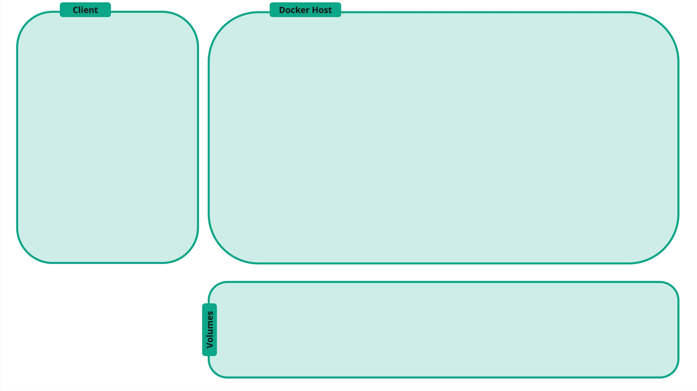
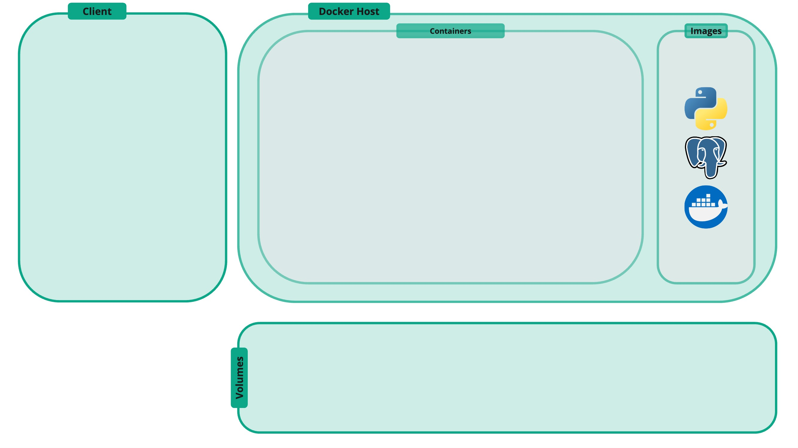
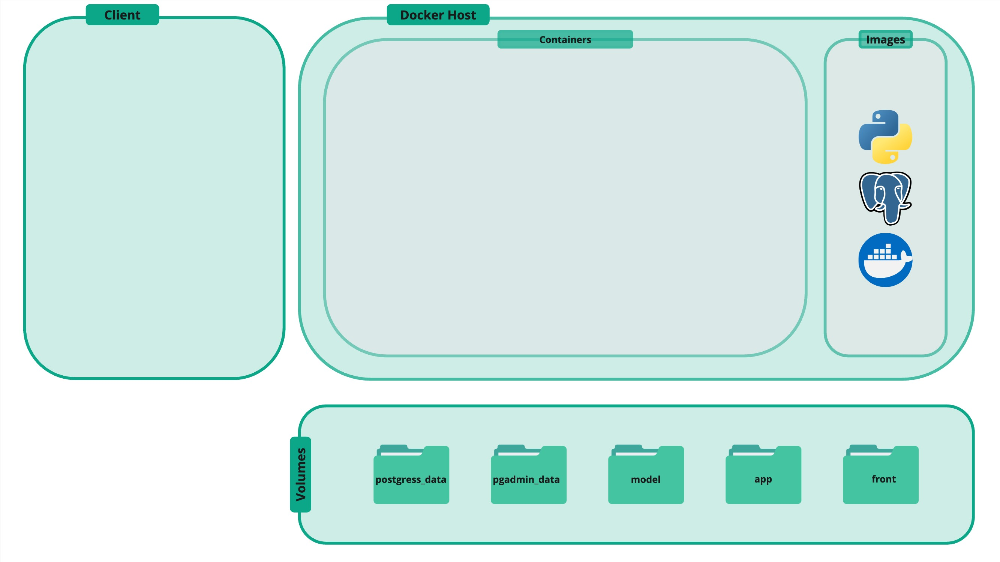
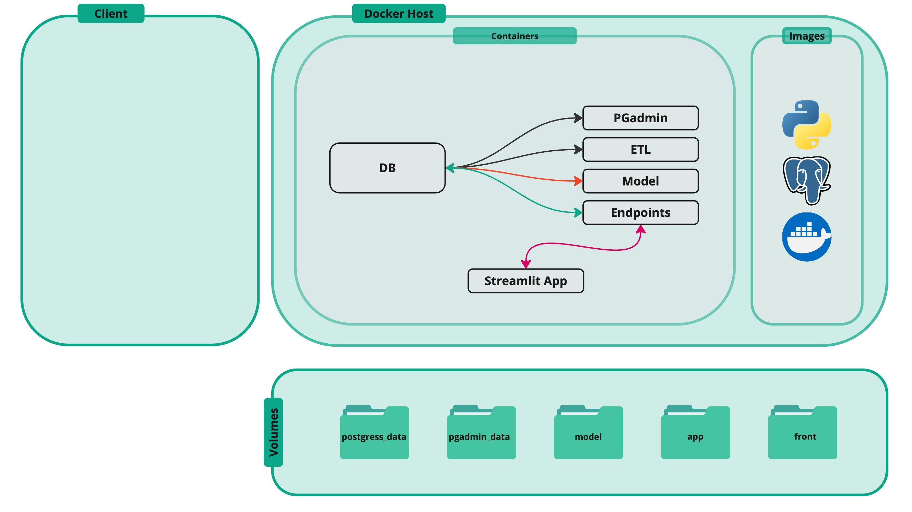
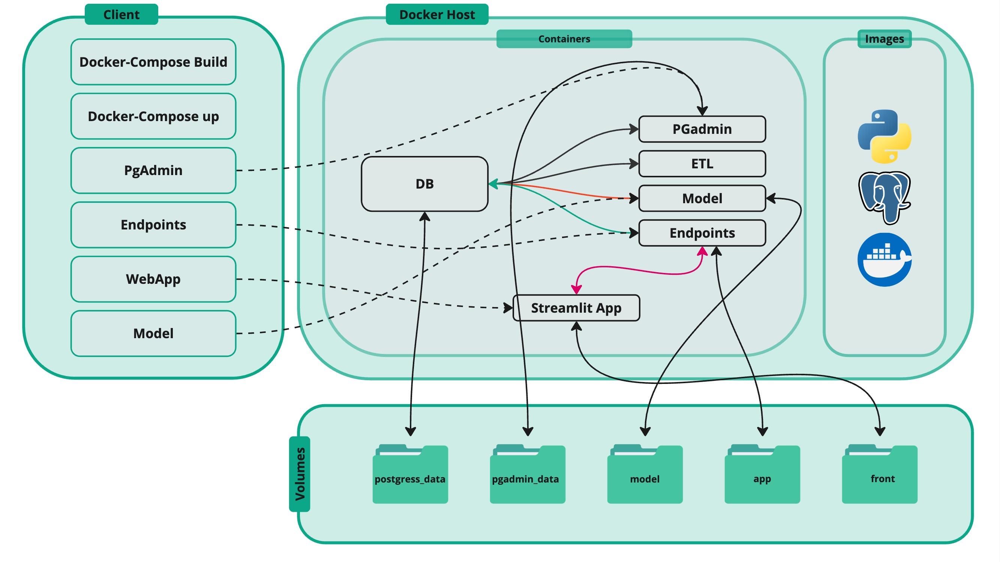
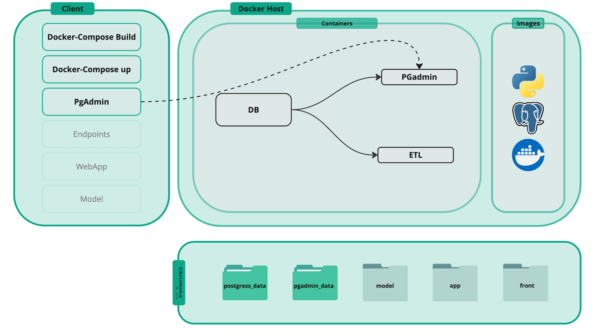

Group Project Series
Karen Hovhannisyan
Environment
Objective
- Docker: intuition
- Schema Design
- Data Generation
- Data Ingestion
Dockerized Environment: 1
Dockerized Environment: 2
Dockerized Environment: 3
Dockerized Environment: 4
Dockerized Environment: 5

Dockerized Environment: We Need
For Today...
Docker files
FROM python:3.10-slim-bullseye
RUN apt-get update && apt-get install -y \
build-essential libpq-dev libfreetype6-dev libpng-dev libjpeg-dev \
libblas-dev liblapack-dev gfortran \
&& rm -rf /var/lib/apt/lists/*
# Set working directory
WORKDIR /etl
# Copy requirements file and install dependencies
COPY requirements.txt requirements.txt
RUN pip3 install --upgrade pip
RUN pip3 install -r requirements.txt
# Copy the rest of the application code
COPY . .
# Expose port 3000
EXPOSE 3000
# Command to run the python file
CMD ["python", "etl.py"]
Docker-Compose
services:
db:
container_name: postgresql_db
image: postgres
restart: always
ports:
- 5432:5432
environment:
- POSTGRES_USER=${DB_USER}
- POSTGRES_PASSWORD=${DB_PASSWORD}
- POSTGRES_DB=${DB_NAME}
volumes:
- ./postgres_data:/var/lib/postgresql/data #persisting data
pgadmin:
container_name: pgadmin
image: dpage/pgadmin4
environment:
- PGADMIN_DEFAULT_EMAIL=${PGADMIN_EMAIL}
- PGADMIN_DEFAULT_PASSWORD=${PGADMIN_PASSWORD}
ports:
- 5050:80 # for local browser (80 is the default port of the browsed)
volumes:
- ./pgadmin_data:/var/lib/pgadmin # Persisting pgAdmin configuration and sessions
depends_on:
- db
etl:
container_name: etl
build: ./etl
ports:
- 3000:3000
volumes:
- ./etl:/etl
depends_on:
- db
Execution
docker-compose up